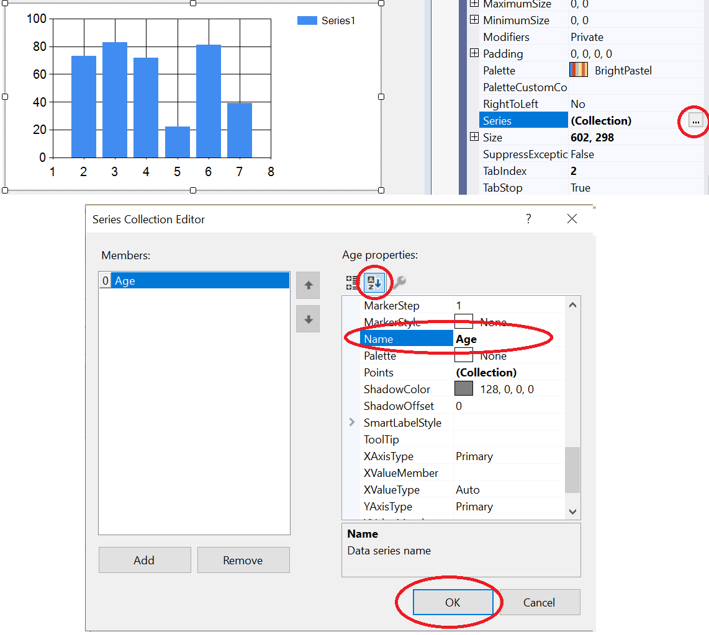

This document provides an overview on how to create a chart with a single data series in a Windows Form application using C#. Two examples are presented, with the first showing how to add a data series manually in the Properties, and the second demonstrating how to add it programmatically.
The first method involves adding a Chart-control from the Toolbox, then creating and modifying the series manually in the properties.
The method button1_Click creates a chart with one series, "Age", with each point in the series having different values. It first sets the title of the chart and the labels of the X and Y axes. Then it adds points to the series by referencing its name. Each point is defined by an X and a Y value. Here, the X value is a string representing a name, and the Y value is an integer.
private void button1_Click(object sender, EventArgs e) { //Series added manually in properties chart1.Titles.Add("Age"); chart1.ChartAreas[0].AxisX.Title = "Names"; chart1.ChartAreas[0].AxisY.Title = "Value"; //reference the series by name - chart1.Series["Age"] chart1.Series["Age"].Points.AddXY("Max", 33); chart1.Series["Age"].Points.AddXY("John", 22); chart1.Series["Age"].Points.AddXY("Phil", 55); chart1.Series["Age"].Points.AddXY("Chad", 53); }
The second method involves adding another Chart-control from the Toolbox, then creating and adding the series programmatically during runtime.
In the method button2_Click, the chart is first cleared of all series. Then a title is set and labels are added for the axes. A Series object, ageSeries, is created and added to the chart. Points are added to the series in the same way as in the previous method.
private void button2_Click(object sender, EventArgs e) { //Series added programmatically only chart2.Series.Clear(); chart2.Titles.Add("Age"); chart2.ChartAreas[0].AxisX.Title = "Names"; chart2.ChartAreas[0].AxisY.Title = "Value"; // Create the "Age" series and add it to the chart Series ageSeries = new Series("Age"); chart2.Series.Add(ageSeries); // Add points to the "Age" series ageSeries.Points.AddXY("Max", 33); ageSeries.Points.AddXY("John", 22); ageSeries.Points.AddXY("Phil", 55); ageSeries.Points.AddXY("Chad", 53); }
When the form is loaded, all series from chart2 are cleared. This isn't done for chart1 because its series was added during design time.
private void Form1_Load(object sender, EventArgs e) { //chart1.Series.Clear(); //Not possible for chart1 because it //is added in design time chart2.Series.Clear(); }
These examples should provide a solid starting point for implementing a chart with a single data series in Windows Form applications using C#.